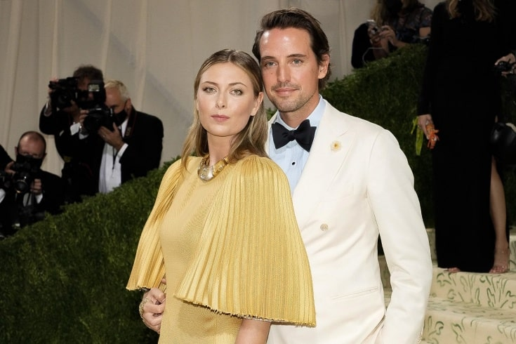

Как выглядит и чем занимается Мария Шарапова на пенсии. И когда же будет свадьба?

Знаменитая теннисистка приехала в Париж во время «Мастерса». Что делает в столице Франции двукратная чемпионка «Ролан Гаррос».
Мария Шарапова завершила профессиональную карьеру в феврале 2020 года перед самым началом пандемии коронавируса. Весь год она не покидала США, путешествовала только по городам Америки и занималась своим бизнесом. А деловых проектов у теннисистки немало. По данным «Форбс», она заработала за карьеру $ 325 млн и часть этих средств вкладывает в качестве инвестиций в различные стартапы. Сейчас бизнес-империя Шараповой занимается конфетами, фитнес-гаджетами, средствами для ухода за телом. Кроме того, у Марии со спортивной карьеры осталось немало рекламных контрактов, поэтому часть своего времени она тратит на съёмки в роликах. Но это всё было до лета 2021 года. Сейчас, если ориентироваться на «инстаграм» теннисистки, её интересы сместились в другую сторону.
Год Марии Шараповой на пенсии! Звезда тенниса готовится к свадьбе и зарабатывает миллионы
Всё лето Шарапова провела в путешествиях по Европе. Сопровождал её почти во всех поездках жених – британский бизнесмен Алекс Гилкс. Свой вояж молодые люди начали с Хорватии. «Каменные фасады, многовековая история и никаких туристов», — подписала Мария снимок в «Инстаграме».